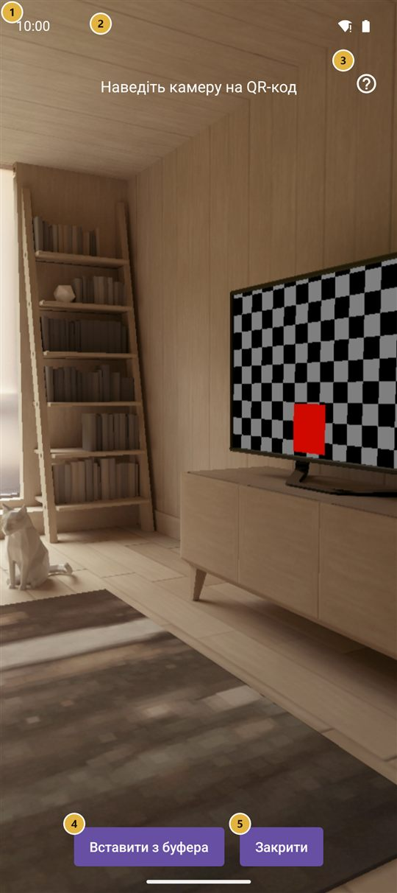
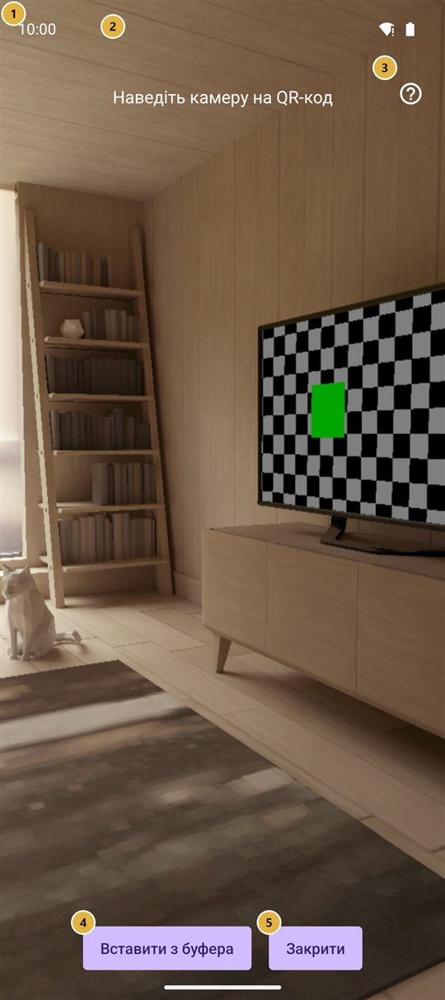

Сканувати QR-код
Для чого цей екран
Зчитайте QR-код камерою, наприклад той, що інший пристрій показує, щоб поділитися прямою трансляцією. Код одразу повертається на екран, який його запросив.


Порядок дій
- Дозвольте камеру, коли Android запитає. Камера читає код, не зберігаючи й не надсилаючи жодних кадрів.
- Наведіть камеру на QR-код 1 і тримайте рівно. Сканування завершиться саме, щойно код буде прочитано.
- Якщо камеру використати не можна, натисніть «Вставити з буфера» 4, щоб узяти текст із буфера обміну.
- Натисніть «Закрити» 5, щоб вийти без результату.
Елементи
1Видошукач камериЩо бачить камера.
Видошукач займає весь екран. Код може бути будь-де; він має бути чітким і повністю в кадрі.
2ПідказкаНагадування, що робити.
Підказує навести камеру на QR-код.
3ДовідкаВідкриває цю сторінку.
«Назад» повертає до камери.
- Сполучення клавіш
- F1
4Вставити з буфераБере текст із буфера обміну.
Для коду, надісланого вам текстом, і на випадок, коли немає камери або дозволу на неї. Якщо буфер порожній, застосунок повідомляє про це.
- Скасування
- «Закрити» виходить без результату.
5ЗакритиВиходить без результату.
Повертає на екран, що відкрив сканер, як кнопка «Назад». Нічого не імпортується.